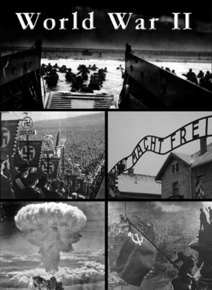

Top 10 Causes of World War II
By: Avery
Treaty of Versailles and German Humiliation
The Treaty of Versailles and German Humiliation - The Prime Movers of World War II
The Treaty of Versailles was signed on June 28, 1919, following Germany's defeat in World War I. The treaty imposed harsh financial reparations and territorial losses on Germany. It aimed to weaken and punish Germany for its role in the war but ultimately sowed the seeds of resentment and eventually gave rise to World War II. The treaty was perceived by the Germans as an unjust humiliation, causing significant instability in the country and leading to a rise of extremist movements, such as the Nazi Party.
The treaty's punitive terms left Germany in a state of economic collapse, with soaring unemployment and hyperinflation. Many Germans felt that the decision makers were more interested in punishing Germany than promoting peace. Moreover, the treaty's "War Guilt Clause" placed sole responsibility for the war on Germany, ignoring the shared responsibility of all nations involved.
The political and economic instability in Germany during the early 1930s allowed the rise of the Nazi Party, which came to power in 1933 with Adolf Hitler as its leader. Hitler quickly developed plans to regain Germany's global dominance and revenge for its humiliation at the hands of the Treaty of Versailles.
The Nazi Party's aggressive foreign policy led to the annexation of Austria in 1938 and the occupation of Sudetenland in Czechoslovakia. The failure of the western powers to effectively respond to the aggression emboldened Hitler to invade Poland in 1939, triggering the start of World War II.
The Treaty of Versailles's harsh terms and the humiliation it caused in Germany were the prime movers of World War II. It highlighted the need for effective international agreements to ensure lasting peace and stability after major conflicts. The lessons learned from it formed the basis of the post-World War II international order.
ad space
Appeasement Policy and Failure of Diplomacy
When it comes to the causes of World War II, there are numerous factors that led to this devastating global conflict. One such factor is the Appeasement Policy and Failure of Diplomacy, which is often considered a crucial turning point that allowed Hitler's regime to strengthen and eventually attack other nations.
The Appeasement Policy was a strategy used by several European countries in the 1930s, whereby they sought to avoid conflict with Nazi Germany by giving into Hitler's demands. This policy allowed Hitler to annex Austria and Sudetenland in Czechoslovakia without any resistance from other European powers. Instead of declaring war on Germany for its aggressive actions, Britain and France chose to appease Hitler in an effort to maintain peace.
However, the failure of diplomacy soon became apparent when Hitler invaded Poland in 1939. This prompted Britain and France to declare war on Germany, starting what would become the deadliest conflict in history.
The failure of diplomacy can be attributed to several factors, including the weak response of European nations to Hitler's aggression, the misunderstanding of Hitler's true intentions, and the lack of unity among European nations. Some historians also point to the miscalculations of the Western powers in failing to recognize the threat posed by the Soviet Union, which later became a key ally in the war effort.
In conclusion, the Appeasement Policy and Failure of Diplomacy is a significant cause of World War II. It reveals the importance of standing up to aggression and the dangers of ignoring warning signs. By learning from the lessons of the past, we can work towards preventing such devastating conflicts from happening again.
ad space
Fascism and Totalitarianism
Fascism and Totalitarianism: The Seeds of World War II
The rise of fascism and totalitarianism during the 1920s and '30s laid the foundation for the deadliest conflict in human history. The combination of aggressive nationalism, charismatic leadership, and state control over every aspect of society fueled the expansionist and militaristic ambitions of Germany, Italy, and Japan. Understanding the origins of fascism and totalitarianism is crucial to comprehending the reasons why World War II happened.
Adolf Hitler's fascist regime in Germany sought to revive German pride and glory after the crippling losses and humiliation of World War I. He promised to rebuild Germany's economy and military power and envisioned a Germany that dominated Europe and the world. Hitler's ideology relied on racial superiority, anti-Semitism, and extreme nationalism that demonized Jews, communists, and other "inferior" groups.
Benito Mussolini's fascist regime in Italy was similarly fueled by nationalism and anti-communism. Mussolini promised to create a "new Roman Empire" through aggressive expansionism and militarism. His regime was characterized by strict state control over society, suppression of political opposition, and the use of propaganda to justify his rule.
Japan's militaristic regime was driven by a desire to expand its empire and access to resources in East Asia. Emperor Hirohito was regarded as a god-like figure and military leaders wielded enormous power over Japanese society. The regime's extreme nationalism, propaganda, and military aggression culminated in the surprise attack on Pearl Harbor in December 1941, which drew the United States into the war.
In conclusion, the rise of fascism and totalitarianism in the 20th century led to the aggressive expansionist policies and militaristic ambitions of Germany, Italy, and Japan, which ultimately resulted in World War II. By examining the origins of these ideologies, we can gain insight into the causes of the deadliest conflict in human history.
ad space
Militarization and Arms Race
The period leading up to World War II was characterized by growing militarization and the arms race between nations. The competition for military superiority fueled tensions, with countries investing heavily in weapons and technology to gain an edge over each other. The arms race was dangerous, as it led to a higher likelihood of conflict, with nations building and stockpiling weapons to prepare for potential warfare.
In the years preceding World War II, many countries were still trying to recover from the devastation of World War I. They were grappling with issues such as economic instability, unemployment, and political unrest. At the same time, many countries were investing heavily in military technology, hoping to secure their position as a dominant power.
The buildup of arms and the militarization of nations created a tense atmosphere that ultimately led to the outbreak of World War II. Countries were competing for dominance, and tensions were high as different nations tried to assert their power. The development of new weapons, such as the atomic bomb, further fueled the arms race and led to even greater fears of conflict.
While militarization and the arms race were not the only causes of World War II, they were a significant factor. The buildup of arms and the drive for military superiority created an environment that was ripe for conflict. It is important to understand the impact of militarization and the arms race to prevent such situations from occurring in the future.
To this day, we continue to see the harmful effects of militarization and the arms race. It is important to learn from the lessons of history and work towards a world that is not defined by conflict and the pursuit of military power. Only then can we hope to create a more peaceful and stable world for future generations.
ad space
Nazi-Soviet Pact
The Infamous Nazi-Soviet Pact: A Key Catalyst for World War II
World War II was one of the deadliest and most destructive conflicts in human history. A massive global war involving a majority of the world’s powerful nations, it lasted for six years and caused the loss of millions of lives. But how did this tragic war begin? There are numerous reasons, events, and actions that led to the outbreak of the Second World War, and in this article, we’ll examine the major causes that set the stage for the conflict.
One key event that had a significant impact on the start of WWII was the Nazi-Soviet Pact - a non-aggression treaty signed between Germany and the Soviet Union on August 23, 1939. At the time, Nazi Germany was aggressively expanding its territory and the Soviet Union was wary of being invaded. In an attempt to avoid conflict, both nations agreed not to engage in any military action against each other, and pledged to remain neutral in case of war.
The Nazi-Soviet Pact caused shockwaves throughout the world, and the consequences were far-reaching. Many Western democracies, including Britain and France, had been hoping that the Soviet Union would join forces with them to oppose Nazi Germany. The pact essentially destroyed those hopes and left the Western powers feeling vulnerable and isolated. The pact also gave Germany a free hand to invade Poland without fear of Soviet intervention, leading Britain and France to declare war on the Axis powers.
In conclusion, the Nazi-Soviet Pact was a significant event that played a pivotal role in the outbreak of WWII. It demonstrated both Germany's willingness to disregard international treaties and the lack of unity among the Western powers. Understanding the causes of World War II is essential for understanding how the conflict unfolded and the lessons that we can take away from it today.
ad space
Failure of the League of Nations
The Failure of the League of Nations: A Catalyst for World War II
As tensions mounted across Europe in the lead up to World War II, the world looked to the newly-formed League of Nations for guidance and leadership. Unfortunately, the League proved to be ineffective in preventing the rise of fascist dictators and the aggression that ultimately led to widespread conflict.
The League was formed in 1920 with the goal of preventing future wars through diplomacy and peaceful conflict resolution. It was largely seen as a response to the devastation wrought by World War I, and was designed to ensure that the world would never again be plunged into such a cataclysmic conflict. However, its ability to prevent war was severely limited by several factors.
First among these was the refusal of several major powers, most notably the United States, to participate in the League or ratify its charter. This limited the League's membership and resources, and made it difficult to take decisive action against aggressors. Additionally, the League's rules prohibited military action except in cases of self-defense, which further limited its effectiveness.
The League also failed to prevent a series of escalating crises that ultimately led to the outbreak of war. Its response to aggressive actions by fascist powers such as Italy and Japan was largely ineffective, and it was unable to prevent the rearmament of Germany under Adolf Hitler.
In the end, the League's failure to prevent the rise of dictators and the onset of war can be seen as a major contributing factor to the outbreak of World War II. However, it also laid the groundwork for the formation of the United Nations after the war, which has been more successful in preventing widespread conflict and promoting international cooperation.
ad space
Economic Depression and Unemployment
Economic Depression and Unemployment: The Harbingers of World War II
As much as we hate to think about it, World War II was the most destructive and deadliest conflict in human history. It impacted every single person on the planet in one way or another, and it had far-reaching consequences even until today. But how did it all start? What were the causes of this devastating war? In this article, we'll explore one of the critical factors that led to the Second World War- economic depression and unemployment.
During the early 20th century, the world economy was experiencing a significant downturn. After the Great Depression of the 1930s, countries across the globe were struggling to maintain their economies. The rise of fascism and extremist political ideologies was fueled by the poverty and high levels of unemployment that plagued Europe and other regions. As a result, the economic crisis became one of the significant factors that contributed to the onset of World War II.
The economic situation in Germany during the 1920s had been particularly severe. The German government had borrowed heavily to finance the war effort during World War I, and the reparations they were forced to pay under the Treaty of Versailles had crippled their economy. The end result was rampant hyperinflation, which meant that ordinary Germans could not afford basic necessities. Unemployment rates were skyrocketing, leading to widespread discontent, social unrest, and eventually, the rise of Adolf Hitler and the Nazi Party.
In response to the economic crisis, countries began implementing protectionist policies and trade barriers, leading to trade wars, further economic instability, and a loss of trust in the world order. The rise of fascism, totalitarianism, and extremist ideologies paved the way for dictators such as Hitler and Mussolini, who sought to exert their power by force on the rest of the world. It wasn't long before the world was plunged into the most brutal and devastating conflict known to humankind.
In conclusion, economic depression and unemployment were two of the leading causes of World War II. As we study history and try to learn from it, let us remember that global economic and political instability can have profound and far-reaching consequences, which we must avoid at all costs.
ad space
Ethnic Tensions and Nationalism
The Roots of World War II: Understanding Ethnic Tensions and Nationalism
The causes of World War II are complex and multi-faceted, but one of the most significant factors was the rise of ethnic tensions and nationalism. During the early 20th century, countries around the world were grappling with social and political upheaval, which resulted in the divisions of people along ethnic and nationalistic lines. These tensions created an underlying tension and animosity that eventually culminated in war.
In Europe, the rise of nationalism and ethnic tensions was particularly prevalent, as countries such as Germany and Italy sought to reassert their dominance on the world stage. Adolf Hitler's rise to power in Germany was fueled by his extreme nationalist agenda, which promoted the superiority of the Aryan race and called for the expansion of German territory. This aggressive stance led to the annexation of Austria and the invasion of Czechoslovakia, ultimately leading to the start of World War II.
In Asia, nationalism and ethnic tensions were also critical factors in the outbreak of war. Japan's invasion of China in 1937 was fueled by an intense desire for expansion and the belief in the superiority of the Japanese people. This resulted in a brutal campaign of violence and terror that ultimately led to Japan's entry into World War II.
Understanding the role of ethnic tensions and nationalism in World War II is essential if we are to learn from history and prevent such catastrophic events from happening in the future. By studying the warning signs and underlying factors that led to the war, we can better understand how to promote global peace and prevent similar conflicts from occurring.
Overall, ethnic tensions and nationalism were significant factors in the outbreak of World War II. The unchecked rise of these ideologies led to devastating consequences and a loss of millions of lives. By acknowledging and learning from the mistakes of the past, we can work towards building a more peaceful and just world for all.
ad space
Failure of Collective Security
The failure of collective security: A key factor contributing to World War II
The causes of World War II were numerous and complex, but one factor that cannot be overlooked is the failure of collective security. In the wake of World War I, the League of Nations was established to prevent future conflicts and promote international cooperation. However, the League was unable to effectively deal with aggression from nations such as Japan, Italy, and Germany, leading to the unchecked expansion of these countries and ultimately to the outbreak of war.
One example of the League's failure was its response to Italy's invasion of Ethiopia in 1935. The League condemned the aggression but imposed no penalties on Italy, allowing the country to continue its expansionist agenda. Similarly, when Japan invaded Manchuria in 1931, the League was unable to stop the aggression, leading to Japan's withdrawal from the organization. These early failures eroded the legitimacy of the League and paved the way for further aggression from other countries.
The most significant failure of collective security, however, was the appeasement policies pursued by Britain and France towards Germany. In an attempt to avoid another global conflict, the Allies allowed Germany to occupy the Rhineland, annex Austria, and ultimately seize Czechoslovakia. Rather than confronting Hitler's aggression, they attempted to appease him, believing that they could prevent war through concessions. This policy of appeasement ultimately failed, emboldening Hitler's ambitions and leading to the invasion of Poland in 1939.
In conclusion, the failure of collective security was a major factor contributing to the outbreak of World War II. The inability of the League of Nations to effectively deal with aggression and the appeasement policies pursued by the Allies allowed Germany to continue its expansionist agenda, leading ultimately to global conflict. By studying and understanding the causes of World War II, we can work towards preventing similar conflicts in the future.
ad space
Rise of Japan as a Military Power
The devastating Second World War was caused by a complex web of political, economic, and social factors that spanned the globe. Many different countries were involved, each with their own role to play. In this article, we'll take a closer look at one of the key factors that ultimately led to the outbreak of war: the rise of Japan as a military power.
Japan had been an isolated island nation for centuries, but in the late 1800s, it began to modernize and expand its influence. Japan's army and navy underwent a significant modernization and expansion process in the early 1900s. It sought to gain economic and political power in Asia, and eventually, the world. This aggressive expansion led to friction with other countries, especially the United States.
The Japanese government saw America as a significant threat to its goals, and the two countries soon butted heads over a number of issues. The most important of these was Japan's desire for greater economic and territorial control in Asia. The US, caught up in its own interests, was unwilling to let Japan have its way. Tensions grew, and when Japan launched a surprise attack on the American Pacific Fleet at Pearl Harbor in December 1941, it marked the beginning of a long and bloody war.
Of course, Japan's rise as a military power was just one of many factors that led to World War II. Other key causes included the Treaty of Versailles, the failure of appeasement, and the rise of fascist regimes in Europe. However, understanding Japan's role is vital to understanding the war itself, and how the world came to be in the situation it was in at the time.
In conclusion, Japan's rise as a military power was one of the most important factors that led to the outbreak of World War II. Its expansionist aims and aggressive tactics ultimately proved to be unsustainable and destabilizing to the global order. By understanding the history of this period and the lessons it provides, we can hopefully avoid a similar situation in the future.
ad space
Conclusion
After examining in-depth the events and factors that led to the outbreak of World War II, it can be concluded that while there were numerous contributing factors, several primary causes were crucial in driving the world towards the bloodiest conflict in history.
At the top of the list, of course, is the Treaty of Versailles, which imposed punitive and humiliating conditions on Germany following the end of the First World War. The treaty's harsh terms, including the loss of territories, financial reparations, and military restrictions, created deep resentment among the German people and laid the groundwork for the rise of Adolf Hitler and the Nazi Party.
Furthermore, the failure of the League of Nations to prevent aggression by Japan, Italy, and Germany allowed these nations to expand their territories without adequate opposition. Meanwhile, the policy of appeasement pursued by Britain and France towards Nazi Germany allowed Hitler to continue on his path towards war, emboldening him to annex Austria and Czechoslovakia.
Other significant causes included the global economic depression and the failure of the international community to coordinate a response to it, as well as the deep-seated nationalism and militarism that characterized many of the world's major powers.
In short, World War II was the result of a complex web of economic, political, and social factors that were deeply intertwined and difficult to disentangle. However, by analyzing these causes, we can gain a better understanding of how and why the war happened, and hopefully learn from these lessons to prevent similar conflicts from occurring in the future.
ad space